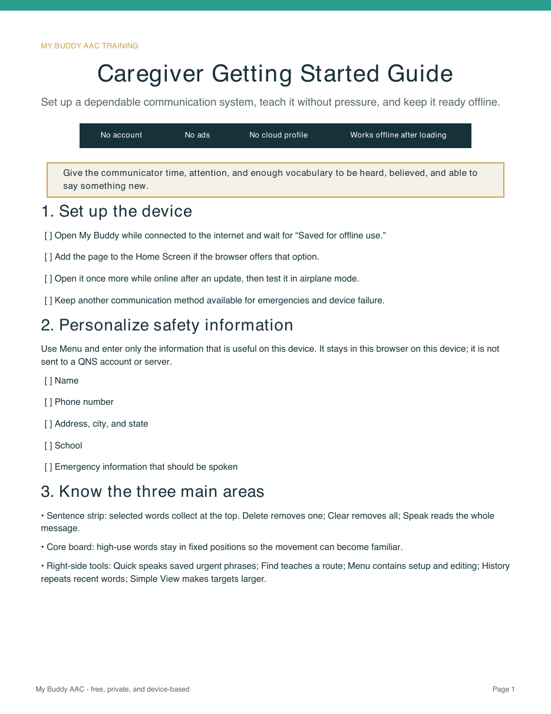
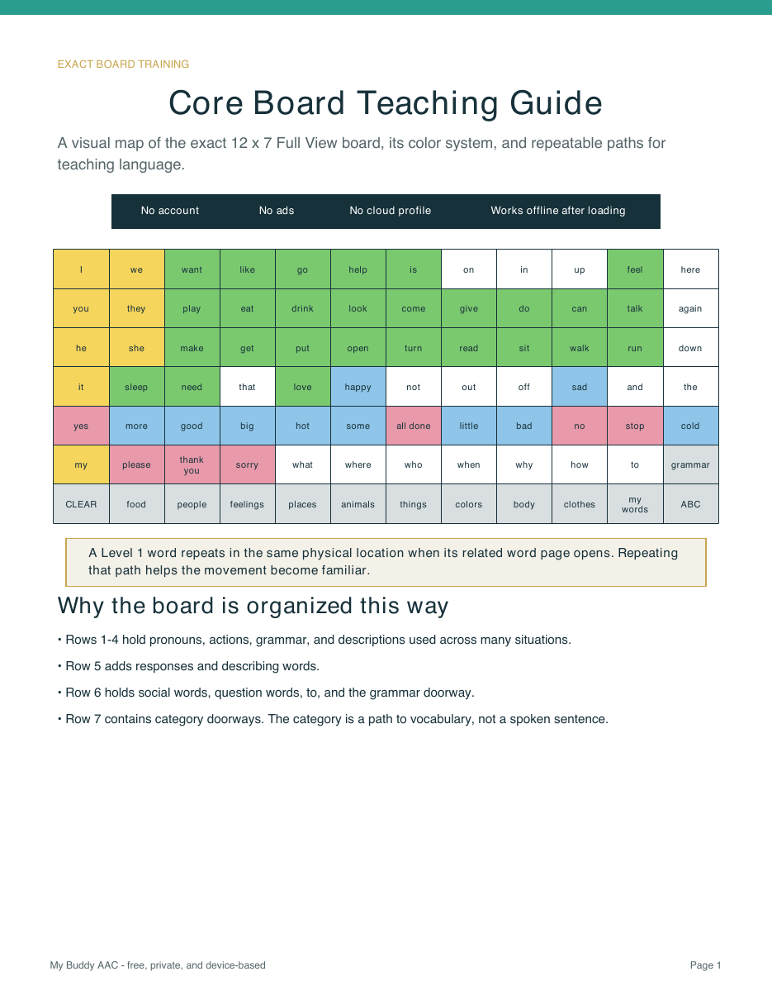
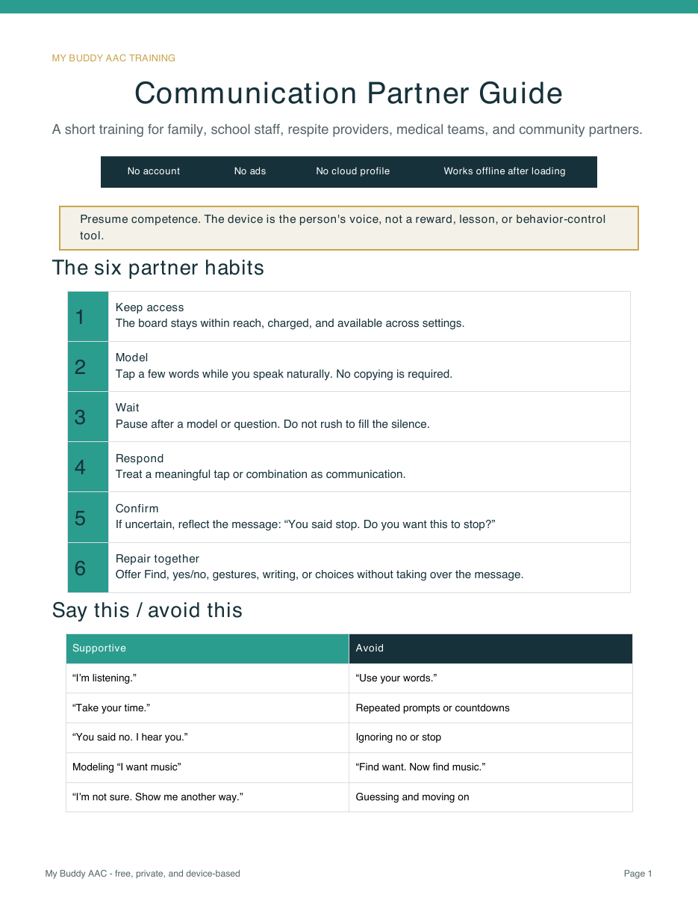
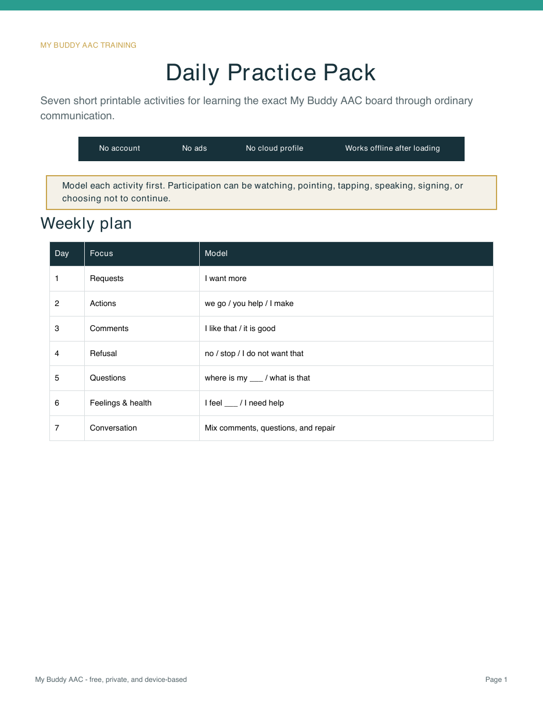
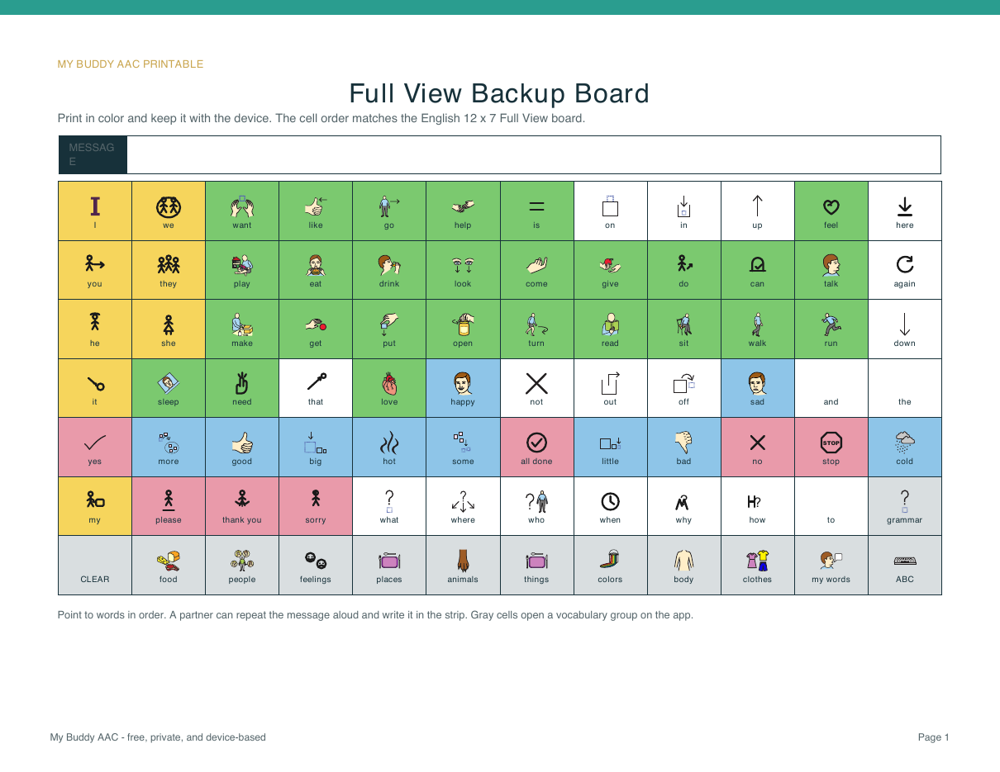
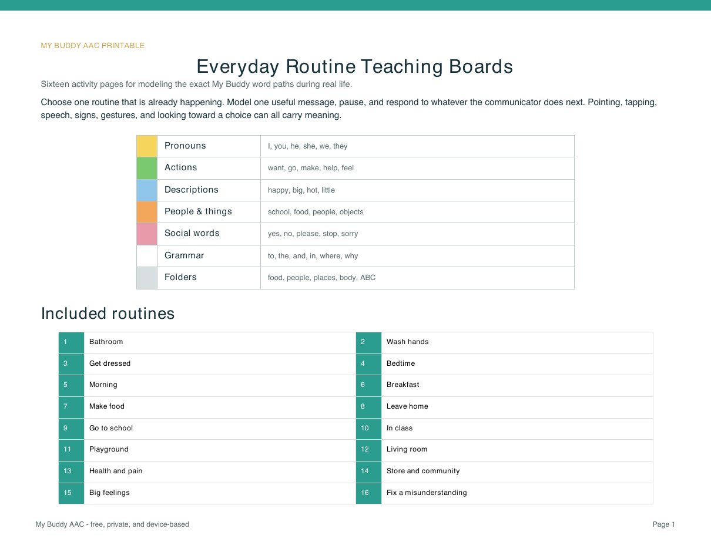

Exact board map
Core Board Teaching Guide
See the complete 12 x 7 board, learn its color key and row structure, and practice useful routes such as “I want to go to school.”
Learn where words live, model useful language during daily routines, and prepare the board for dependable everyday use.
Every resource uses the organization, vocabulary, colors, and motor-planning approach of the current English My Buddy board.






Important: My Buddy is not a medical device or a substitute for an individualized AAC assessment or speech-language pathologist. Keep a backup way to communicate.